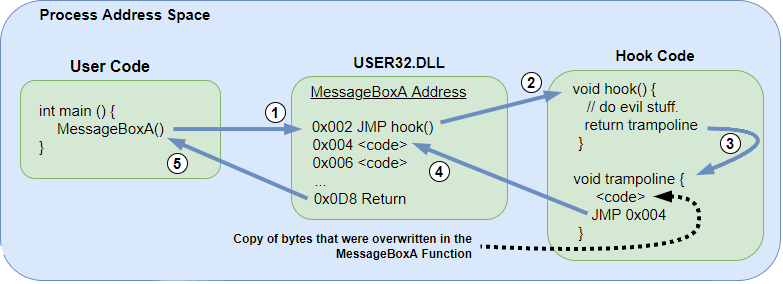
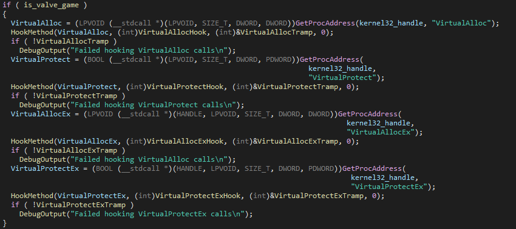
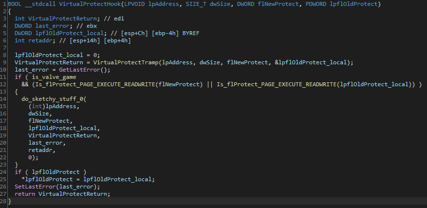

Hello there, been a long time ! Today i will talk about the implementation of winapi hooks inside Valve Anti Cheat (aka VAC).
A bit of context
Everything i will say is directly from this topic on UC
What is hooking ?
In the first place we need to properly understand the way hooking works. To hook a function you need to overwrite the first 5 bytes to jmp 0xYOURADDR where 0xYOURADDR is the memory address for the function that will replace the original (a pointer basically). We can also save the original function pointer to return to the original function after our code, this is called a trampoline (tramp) hook.

What's up with VAC ?
Some guy reported that VAC may be hooking VirtualProtect to check if you're messing with the game's code. Another one showed that it has already been reported on UC in the past
Reversing VAC
VAC is actually in GameOverlayRenderer.dll, which manages... the Steam overlay you got it. Pretty dumb design if you ask me but VAC always tries to think outside of the box. From now we just open the dll in IDA, search for the string "VirtualProtect" and we find it ! Here it is after some renaming :

We can see that VAC actually hooks a ton of those winapi functions. For the code, it's pretty straight forward :
- We get the address of VirtualProtect in the memory with
GetProcAddress - We hook the function by passing to
HookMethodits pointer, the pointer of the modified function and the tramp pointer that we want to use. Now we can actually start looking inside of the hook for VirtualProtect. Here is the cleaned code :

We see that the function is defined the same as the original one; you need to do this when hooking.This function basically executes VirtualProtect as usual with the trampoline pointer, sets the LastError and returns the result.But you may have noticed an if statement, pretty self explanatory but if the game we're running is a Valve game and we're trying to change the rights of the region to execute/read/write, then it jumps todo_sketchy_stuff_0 which i haven't decompiled yet (lol) but it must have something to do with VAC reporting abuse.